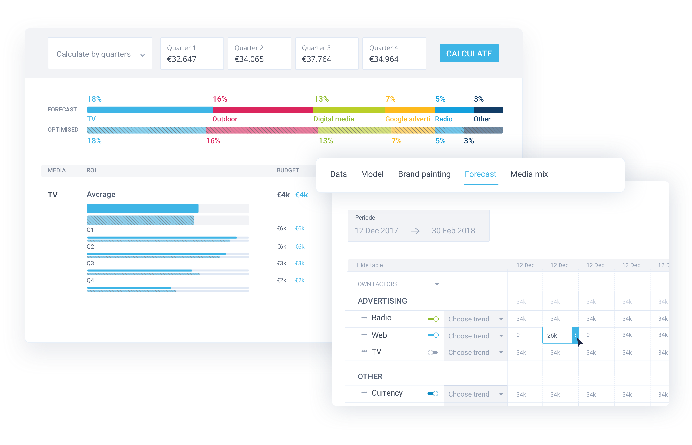
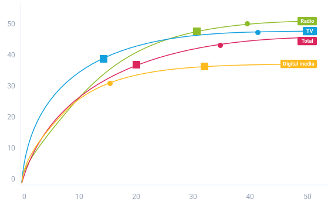

Make effective marketing investments, both short- and long-term for various KPIs, including revenue, profit, brand equity, acquisition, unique visits and store traffic
Assessment of full marketing mix, digital and cross-media campaigns
Online traffic and conversion, offline sales and retail traffic as well as brand metrics as KPIs
ROMI calculation and tracking
Budget optimization across sales, brand metrics, digital and cross-media channels
Approach
Integrated attribution models using machine learning at various levels (store, market, user, household, etc.)
Total coverage of multiple media (TV, Rado, Magazines, OOH, Mobile, Digital, addressable and non-addressable paid, owned, earned, native ads, paid search, organic search, word of mouth, influencer programs, PR)
Different time and geographical granularity levels (weekly, daily, event-level / person, user, household, DMA)
Model update without developers

Operation process
Planning and tracking of media budget
KPI forecast
Calculating ROMI for each media spend line
Actual data upload from Media Plan Manager, XLS, through API
Automatic adjustment of output with every entry of new data

Reports
Development of Marketing Mix & Unified Models as well as Digital & TV attribution
Definition of baseline and incrementality
Media interactions, halos, long-term effects and adstock
Model fit statistics, normative database and forecast accuracy